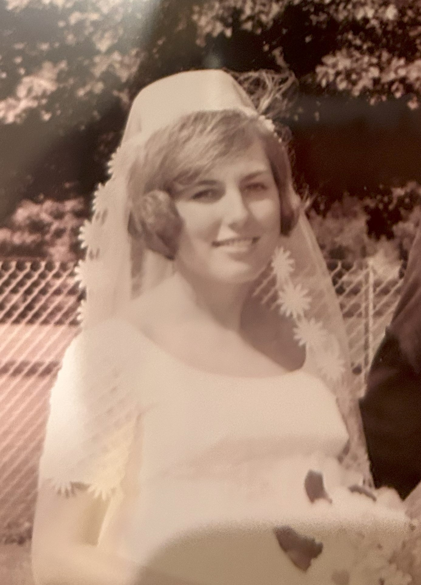

- Donald Marshall --- Mary Kuzmitz Marshall
Born: 24 Jan 1912, Niles, Michigan
Death: Living
Married: 09 Sep 1944
Born: 02 Nov 1915, South Bend, Indiana
Death: Living

- Joan K. Marshall
Married: 17 Aug 1968
Born: 16 Sep 1945, South Bend, Indiana
Death: Living


- Batt J. Vernetti --- Anna Grunenfelder Vernetti
Born: 14 Mar 1913, Butte, Montana
Death: N/A
Married: 18 Apr 1940
Born: 04 Mar 1915, Mandan, North Dakota
Death: N/A

- James G. Vernetti --- Joan K. Marshall
Born: 02 Jun 1945, Dennison, Texas
Death: 15 May 2020
Married: 17 Aug 1968
- Gavin Patrick Dillon --- Kathryn Ann Vernetti Dillon
Born: 22 Feb 1969, Silver Springs, Maryland
Death: Living
Married: 02 Nov 1996, South Bend, Indiana
Death: Living
- Keelin Ann Dillon
Born: 23 May 2000, Chicago, Illinois
Death: Living
Married: Single
- Rowan James Dillon
Born: 04 Jul 2001, Seattle, Washington
Death: Living
Married: Single
- Shea Kathleen Dillon
Born: 11 Jul 2004, Seattle, Washington
Death: Living
Married: Single


- Louis Rangel --- Kristin Lynn Vernetti Rangel
Born: 29 Apr 1969, Los Angeles, California
Death: Living
Married: 13 March 2004 San Diego, California
Born: 29 Apr 1973, Escondido, California
Death: Living
- Nicolina Marie Rangel
Born: 23 Oct 2013, Torrance, California
Death: Living
Married: Single


- Brian James Vernetti --- Lindsay J. Redman Vernetti
Born: 12 Aug 1978, Escondido, California
Death: Living
Married: 02 Jan 2016
Born: 21 Aug 1983, Denver Colorado
Death: Living
- Benjamin James Vernetti
Born: 08 Oct 2019, San Diego, California
Death: Living
Married: Single
- Robert Blake Vernetti
Born: 14 Dec 2021, San Diego, California
Death: Living
Married: Single